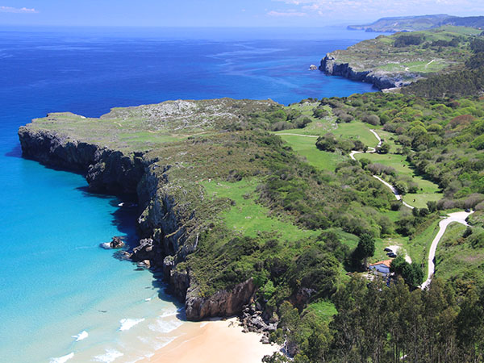

-
Costa
Etapa 1: Bustio-Ribadesella
Etapa 2: Ribadesella-Villaviciosa
Etapa 3: Villaviciosa-Gijón
Etapa 4: Gijón-Avilés
Etapa 5: Avilés-Luarca
Etapa 6: Luarca-Castropol
-
Costa (Gravel)
Etapa 1: Colombres-Ribadesella
Etapa 2: Ribadesella-Villaviciosa
Etapa 3: Villaviciosa-Gijón
Etapa 4: Gijón-Avilés
Etapa 5: Avilés-Luarca
Etapa 6: Luarca-Castropol
-
Interior
Etapa 1: Castropol-Grandas
Etapa 2: Grandas-Tineo
Etapa 3: Tineo-Oviedo
Etapa 4: Oviedo-Cangas
Etapa 5: Cangas-Colombres
-
Montaña
Etapa 1: Castropol-Grandas
Etapa 2: Grandas-Cangas
Etapa 3: Cangas-Degaña
Etapa 4: Degaña-Teverga
Etapa 5: Teverga-Rioseco

Etapa 6: Rioseco-Cangas
Etapa 7: Cangas-Colombres
-
Enlaces
Navia-Grandas
Luarca-Tineo
Muros-Grado
Gijón-Oviedo
Villaviciosa-Nava
Colunga-Arriondas

Nueva-Cangas
Tineo-Cangas
Trubia-Caranga